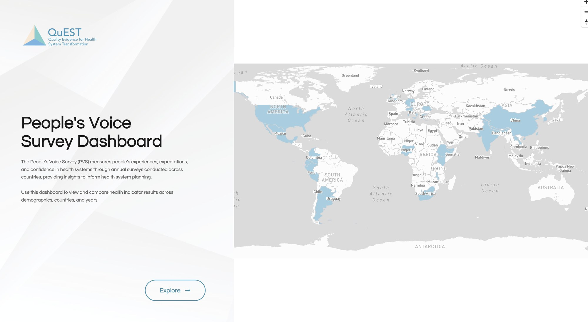

Data visualization
People's Voice Survey Dashboard
An interactive public health dashboard for exploring People’s Voice Survey results, built for researchers and policymakers.

Overview
the problem, who it was for and why it mattered
What I built
- Built and launched the interactive dashboard.
- Engineered a scalable backend API with advanced filtering.
Outcome
- 350+researchers and policymakers
- <2svisualization load time, down from minutes
Presented at the 2025 Science for Health Systems Conference.